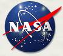

Astronaut Class of 1998
|
NASA Press Release 98-97: NASA
Names Astronaut Class of 1998
NASA Press Release 98-155: International
Candidates Join 1998 Astronaut Class
Astronaut Class of 1995
Astronaut Class of 1996
Astronaut Class of 2000
Home | Astronauts | Astronaut Candidates | Cosmonauts
| Payload Specialist Astronauts | Astronaut
Information
Web
Accessibility and Policy Notices |
 |